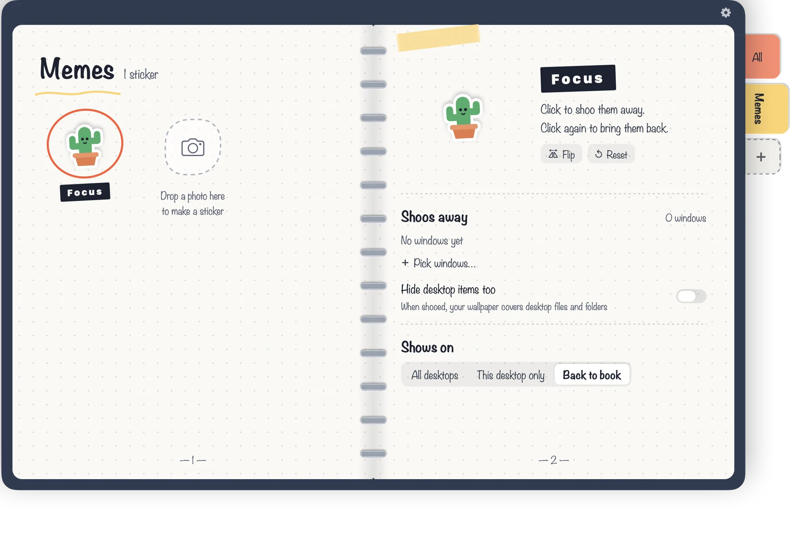
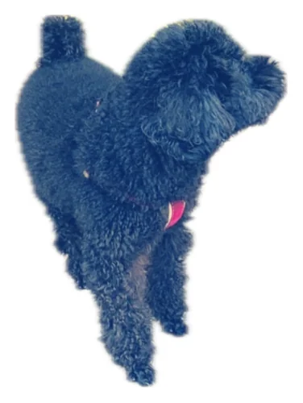

A sticker book for your Mac desktop
Click a sticker. Windows shoo away.
Stick Shoo on your desktop and tell it which apps or windows it looks after. One click and they all disappear; another click and everything is back exactly where it was.
Download on the Mac App Store


Each sticker looks after part of this page. Click one.
Click once. Clean desk.
Try it: pick a moment, then click the little devil.
Make it yours
Turn any photo into a sticker — your dog, your friends, your favorite meme — and give each one its own job.

Drag a photo into the bookor just click it
- Drop in a photo; Shoo cuts it out right on your Mac
- Sort stickers into your own tabs and colors
- Each sticker hides its own set of windows
See which windows a sticker looks after
When a window that belongs to a sticker comes to the front, Shoo puts a strip of washi tape on its top-left corner, tinted to match the sticker. Try the styles.
Washi tape: included for free. You can switch it off under “Window marks” in Settings.
How it works
Three steps, no setup screens.
Peel off a sticker
Drag a sticker out of the book and drop it anywhere on your desktop.
Point at the windows
Choose “Pick windows…” and click the windows or apps this sticker should look after.
Click. Shoo!
Click the sticker to hide them all. Click again to bring them back.
Small things that make it nice
Everything happens on your Mac, right in the book.
- One window or the whole appSafari, Chrome and Notes can hide a single window; other apps hide as a whole.
- Hide desktop items tooCovers the files on your desktop with your own wallpaper while a sticker is active.
- All desktops or just this onePut a sticker on every desktop, or keep it on one.
- Edit right in the bookRename, resize, rotate and mirror stickers where you see them.
- Stay out of the wayShow Shoo in the Dock, in the menu bar, or neither. Turn on “Open at login” and it is there when your Mac starts.
- Eleven languagesEnglish, Español, Deutsch, Français, Português, Tiếng Việt, 繁體中文, 简体中文, 日本語, 한국어 and ไทย.
Free to start
The little devil is yours for free, with every feature. Unlock the rest once — no subscription.
Free
The little red devil
- Every feature on one sticker
- Hide windows, apps and desktop items
- All languages
- Window marks with washi tape

Unlock everythingOne-time purchase
- 5 more hand-drawn stickers
- Make stickers from your own photos
- Your own category tabs and colors
- As many stickers as you like
- 3 more window mark styles: mini sticker, stitches, glow

Your desk stays yours
- No account, no ads, no tracking
- Stickers and settings stay on your Mac
- Photo cut-outs are made on your Mac — nothing is uploaded
- Shoo only hides and shows the windows you picked; it never reads what’s in them
Questions
Why does macOS ask to let Shoo control Safari, Chrome or Notes?
That’s how Shoo hides just one window of those apps. Shoo only tells the app to hide or show the window you picked. If you say no, Shoo hides the whole app instead.
Can I hide every window of any app?
Yes. Any app can be hidden as a whole. Hiding a single window works with Safari, Chrome and Notes.
Is it a subscription?
No. Shoo is free with the little devil sticker. Unlocking everything is a one-time purchase.